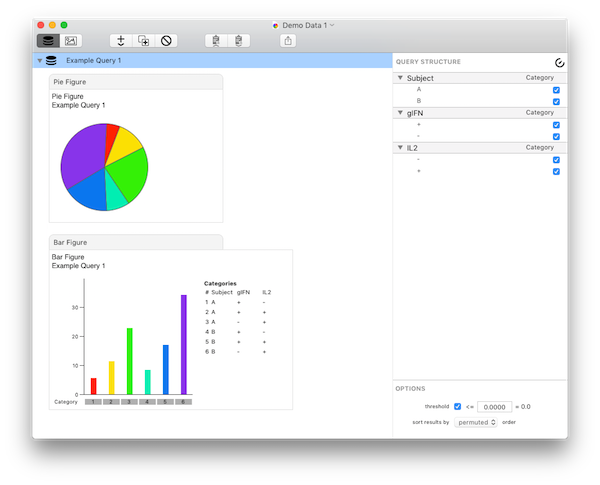

Multicolor flow cytometry experiments generate vast amounts of complex data and require sophisticated software for their evaluation. SPICE is a data mining software application that analyzes large FLOWJO data sets from polychromatic flow cytometry and organizes the normalized data graphically.
SPICE enables users to discover potential correlations in their experimental data within complex data sets. Many potential applications for SPICE exist: the software can be used to analyze any multivariate data set for which a series of nominal measurements and a single continuous measurement is available.
SPICE is developed for and currently used in the ImmunoTechnology lab of the NIAID Vaccine Research Center as well as by the scientific community throughout the world. It's been cited over 400 times. (see SPICE citations)